[Project] DKT 대회 - Modeling
Deep Knowledge Tracing Modeling
- 개발 환경
OS : ubuntu 18.04.5 LTS
GPU : Tesla V100-SXM2-32GB
cuda : 11.0.0- 버전 관리
Git, HuggingFaceDatasets- version
python: 3.10.11 catboost: 1.2
hydra-core: 1.3.2
numpy: 1.24.3
omegaconf: 2.3.0xgboost: 1.7.5
pandas: 2.0.1
scikit-learn: 1.2.2
ML_models.
|-- log : [hydra log file]
|-- src : [source code]
| |-- catboost
| | |-- catboost_classifier.py
| | `-- catboost_regressor.py
| |-- data_loader.py
| |-- data_process.py
| |-- submission.py
| |-- train_test_split.py
| `-- xgboost
| `-- xgboost_classifier.py
|-- submit : [submission.csv]
|-- __init__.py
|-- train.py : [main file]
`-- config_hydra.yaml : [hydra config file]
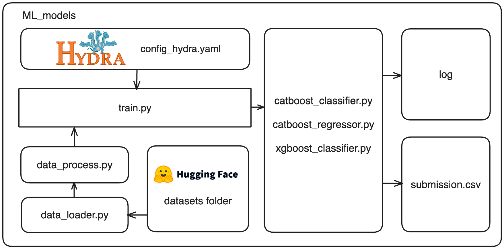
01_ train_test_split.py
목표 : test셋의 데이터 크기와 구성에 따른 모델 성능 파악
참조 : Andrew ng - Structuring Machine Learning Projects [Sizeof Dev and Test Sets]
Key point : 과거에 데이터가 작을 경우에는 7:3의 train/test split이 성능이 좋았지만, 데이터셋이 크면 1%의 데이터도 10,000이상이 되기 때문에 test 데이터의 비율을 줄이고 학습 데이터를 더 크게 하는 것이 성능향상에 도움이 되는 경향이 있다
-
config_hydra.yaml
... dataset_feature: train_data_cut: head_tail_one # [all, head, tail], [head_tail_one, head_tail_group_one, head_one, tail_one] - userID별 첫 문제, 마지막 문제를 test에 사용 test_split: 0.1 # 1> value > 0 feature: [ # Base feature [base데이터 기반으로 검증을 하기 때문에 변경 금지] 'userID', 'assessmentItemID', 'testId', 'Timestamp', 'KnowledgeTag','LargeCategory', 'TimeElapsed', 'TimeElapsed_category', ..., ] # 정답 데이터 label: 'answerCode' # merge 할때 검증 데이터 valid_feature: ['userID', 'assessmentItemID', 'testId', 'KnowledgeTag', 'LargeCategory', 'TimeElapsed', 'answerCode'] ...dataset_feature의 train_data_cut 기반으로 학습 데이터셋 생성
-
train_test_split
- all
if train_data_cut == 'all': test_dataset_tail = dataset.groupby('userID').apply(lambda x: x.tail(int(len(x) * test_split))).reset_index(drop=True) test_dataset_head = dataset.groupby('userID').apply(lambda x: x.head(int(len(x) * test_split))).reset_index(drop=True) test_dataset = pd.concat([test_dataset_head, test_dataset_tail], ignore_index=True)userID 그룹별 head에서 test_split%, tail에서 test_split%의 행들을 테스트 데이터로 사용
- head
elif train_data_cut == 'head': test_dataset = dataset.groupby('userID').apply(lambda x: x.head(int(len(x) * test_split))).reset_index(drop=True)userID 그룹별 head에서 test_split%의 행들을 테스트 데이터로 사용
- tail
elif train_data_cut == 'tail': test_dataset = dataset.groupby('userID').apply(lambda x: x.tail(int(len(x) * test_split))).reset_index(drop=True)userID 그룹별 tail에서 test_split%의 행들을 테스트 데이터로 사용
- head_tail_one
elif train_data_cut == 'head_tail_one': test_dataset_head = dataset[dataset["userID"] != dataset["userID"].shift(1)] test_dataset_tail = dataset[dataset["userID"] != dataset["userID"].shift(-1)] test_dataset = pd.concat([test_dataset_head, test_dataset_tail], ignore_index=True)userID 그룹별 head에서 1줄, tail에서 1줄의 행들을 테스트 데이터로 사용
- head_tail_group_one
elif train_data_cut == 'head_tail_group_one': test_dataset_head = dataset.groupby(["userID", "testId"]).head(1).reset_index(drop=True) test_dataset_tail = dataset.groupby(["userID", "testId"]).tail(1).reset_index(drop=True) test_dataset = pd.concat([test_dataset_head, test_dataset_tail], ignore_index=True)userID 그룹내의 testId별 head에서 1줄, tail에서 1줄의 행들을 테스트 데이터로 사용
- head_one
elif train_data_cut == 'head_one': test_dataset = dataset[dataset["userID"] != dataset["userID"].shift(1)]userID 그룹별 head에서 1줄의 행들을 테스트 데이터로 사용
- tail_one
elif train_data_cut == 'tail_one': test_dataset = dataset[dataset["userID"] != dataset["userID"].shift(-1)]userID 그룹별 tail에서 1줄의 행들을 테스트 데이터로 사용
02_ Modeling
02_01 CatBoost_Classifier
-
feature_importances [head_tail_one]
피처 중요도 assessmentItemID 30.837479802165063 LargeCategory 20.379422848684584 userID 17.992163365480707 TimeElapsed 10.034321065891932 testId 9.408169387494867 TimeElapsed_category 8.54008358793767 KnowledgeTag 1.1509929524935065 weekday 0.8977411576214861 hour 0.7596258322302241 -
Learning Curve
- all [userID group당 head: 5%, tail: 5%]
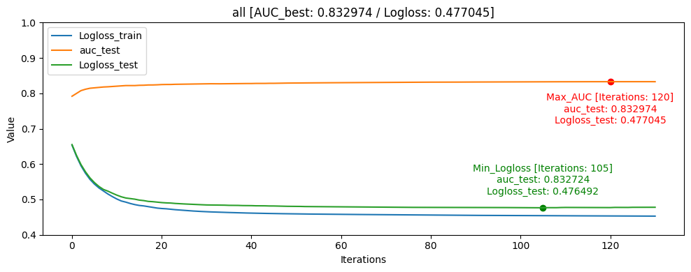
- head [userID group당 head: 10%]
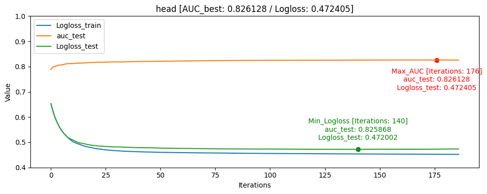
- tail [userID group당 tail: 10%]
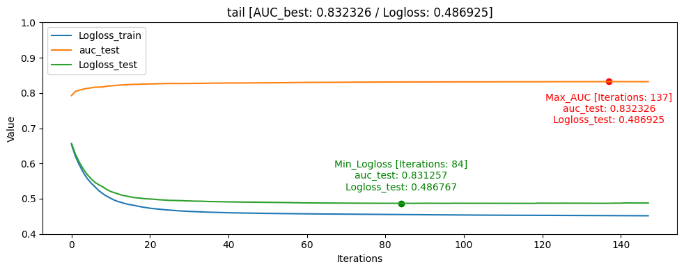
- head_tail_one [userID group당 head: 1, tail: 1]
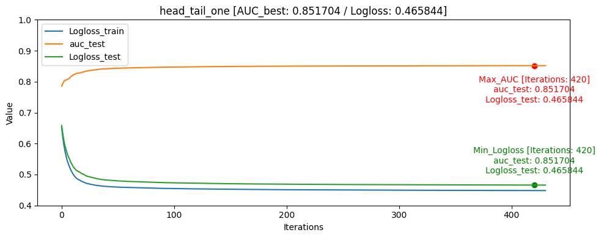
- head_tail_group_one [userID group+assessmentItemID당 head: 1, tail: 1]
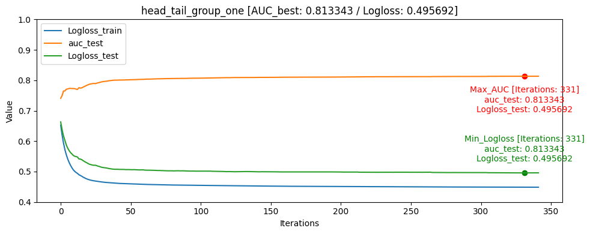
- head_one [userID group당 head: 1]
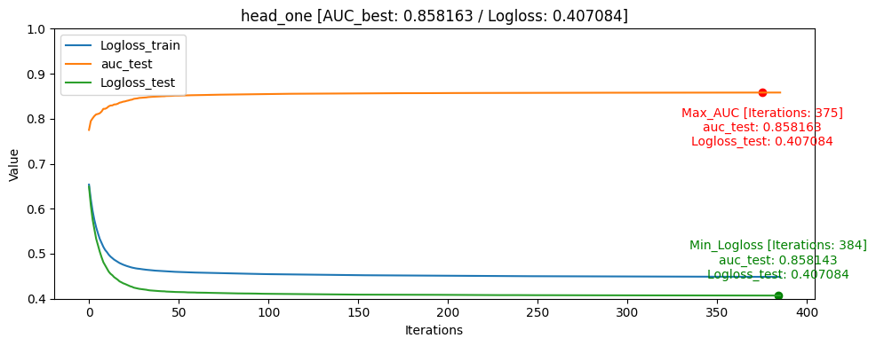
- tail_one [userID group당 tail: 1]
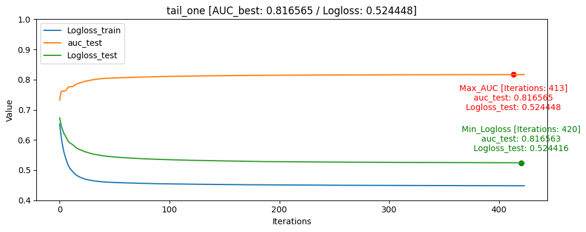
-
결과 요약
- Result Table [AUC 기준 정렬]
train/test split [AUC] ACC Train data: 0 Train data: 1 Train data: 0/1 ratio Test data: 0 Test data: 1 Test data: 0/1 ratio Test data percentage head_one 0.858163 0.818597 1648249 870263 1.89 5337 2105 2.54 0.40% head_tail_one 0.851704 0.779024 1644588 866417 1.90 8958 5926 1.51 0.74% all 0.832974 0.777895 1494743 784845 1.90 158303 87229 1.81 32.45% tail 0.832326 0.771043 1497730 778199 1.93 155379 93904 1.66 38.01% head 0.826128 0.780402 1486194 789710 1.88 166913 82370 2.03 33.16% tail_one 0.816565 0.741064 1649927 868522 1.90 3821 3621 1.05 0.52% head_tail_group_one 0.813343 0.765324 1117402 589584 1.90 533203 281175 1.90 68.92% ACC[accuracy]는 학습 완료 후 test 데이터셋을 통해 측정 하였습니다
- hyperparameter
iterations: 1500 learning_rate: 0.1 eval_metric: AUC random_seed: 42 use_best_model: True bagging_temperature: 1 border_count: 254대회에서의 public score은 head_tail_one가 가장 높게 나왔습니다. 로컬에서는 head_one가 성능이 가장 높게 나왔지만 public score은 head_tail_one에 비해 낮았습니다.
파악한 이유로는 학습 데이터 자체가 라벨인 0인 데이터가 많았고, 모델에서도 좀 더 빈번하게 학습을 하게 되었던 것으로 보이며, head_one의 0, 1 비율도 2.54로 가장 0이 많은 데이터였습니다.
또한 데이터의 원래 데이터셋이 Sequence한 데이터이기 같은 userID가 푼 문제를 고려해야하는 동시에 각자 푼 문제의 개수가 달라지고 임의의 수치로 집어 넣기 어려운 개인의 숙련도가 있기 때문에 단순하게 각각 유저의 첫번째 문제를 test데이터로 검증하고 조절하는 것이 좀 더 단순 했고 이 때문에 로컬 테스트 환경에서 모델의 해석 및 설명력에서 더 좋았고 AUC/ACC가 더 높을 것이라 추측 됩니다.
그래프를 통해서도 head_one의 Logloss_test가 Logloss_train보다 더 낮게 나오며 일반화가 빠르게 된것을 확인할 수 있었습니다.
모델의 일반화는 head_one가 잘 되었지만 test데이터 자체가 dkt대회의 의도인 마지막으로 푼 문제의 결과를 예측하는 것과는 정반대의 실험이였기 때문에 head_tail_one이 더 좋은 public score를 달성하였습니다.
02_02 CatBoost_Regressor
-
feature_importances [head_tail_one]
피처 중요도 assessmentItemID 25.6370474484145 userID 23.34964132877283 TimeElapsed 23.117647780172927 LargeCategory 11.681206689716554 testId 6.881576643100849 TimeElapsed_category 6.672992232579046 hour 1.4462463208473804 weekday 0.6146904016820545 KnowledgeTag 0.5989511547139237 -
Learning Curve
- all [userID group당 head: 5%, tail: 5%]
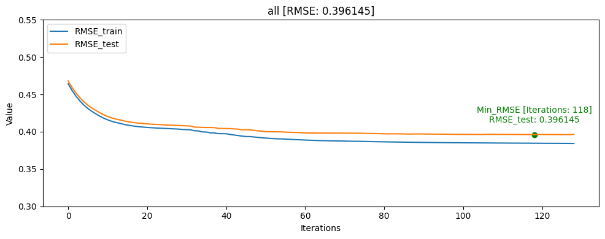
- head [userID group당 head: 10%]
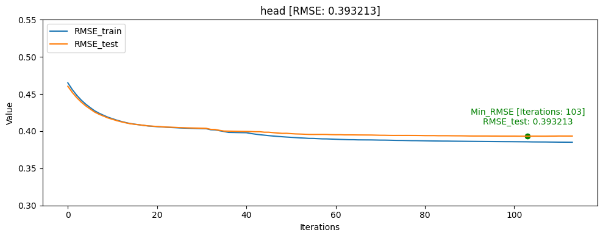
- tail [userID group당 tail: 10%]
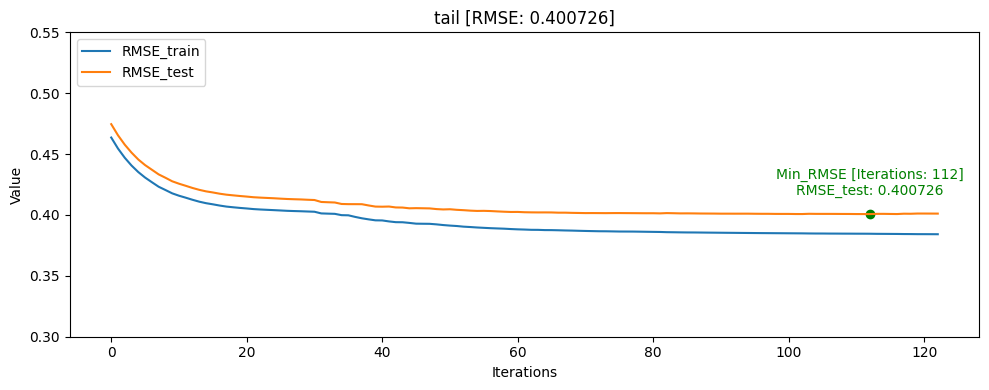
- head_tail_one [userID group당 head: 1, tail: 1]
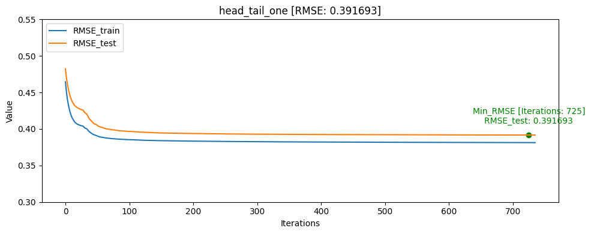
- head_tail_group_one [userID group+assessmentItemID당 head: 1, tail: 1]
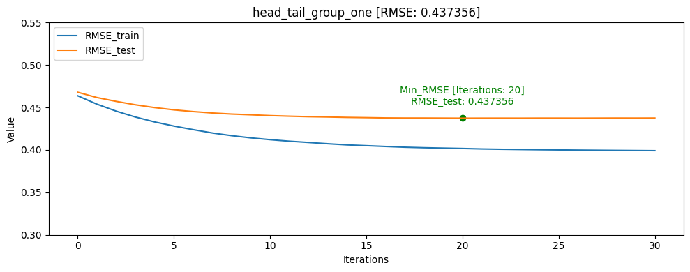
- head_one [userID group당 head: 1]
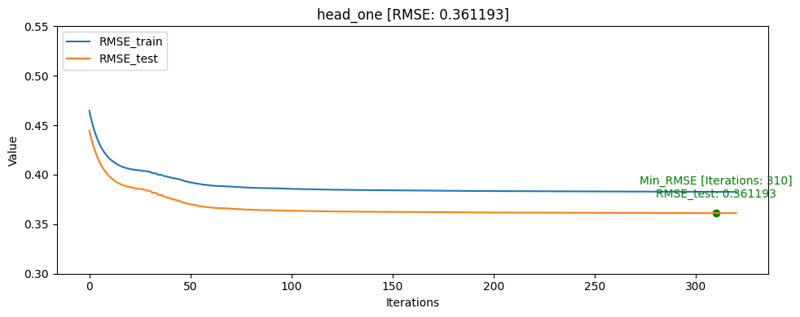
- tail_one [userID group당 tail: 1]
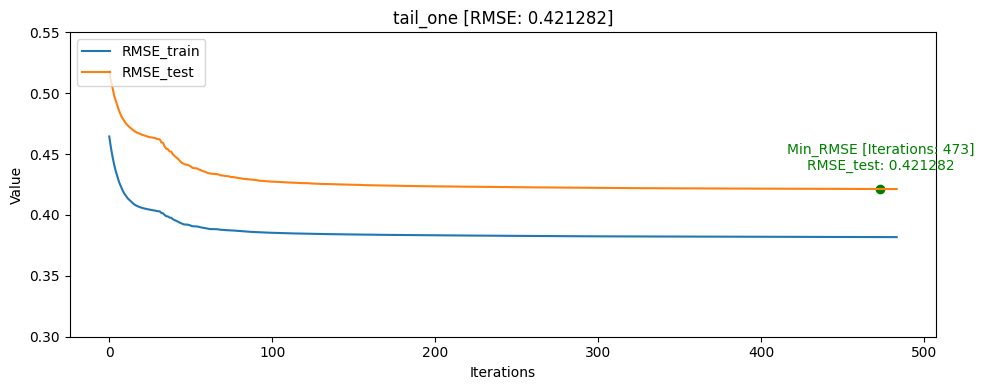
-
결과 요약
- Result Table [AUC 기준 정렬]
train/test split RMSE [AUC] ACC Train data: 0 Train data: 1 Train data: 0/1 ratio Test data: 0 Test data: 1 Test data: 0/1 ratio Test data percentage head_one 0.361193 0.855990 0.821015 1648249 870263 1.89 5337 2105 2.54 0.40% head_tail_one 0.391693 0.850371 0.779629 1644588 866417 1.90 8958 5926 1.51 0.74% all 0.396145 0.831156 0.775251 1494743 784845 1.90 158303 87229 1.81 32.45% tail 0.400726 0.830980 0.768504 1497730 778199 1.93 155379 93904 1.66 38.01% head 0.393213 0.823580 0.778051 1486194 789710 1.88 166913 82370 2.03 33.16% tail_one 0.421282 0.812667 0.734077 1649927 868522 1.90 3821 3621 1.05 0.52% head_tail_group_one 0.437356 0.740576 0.710391 1117402 589584 1.90 533203 281175 1.90 68.92% CatBoost Regressor에서 AUC를 사용할 수 없기 때문에 RMSE를 기반으로 학습하여 AUC[Area Under Curve], ACC[accuracy]는 학습 완료 후 predict model과 test 데이터셋을 통해 측정 하였습니다
- hyperparameter
iterations: 1500 learning_rate: 0.1 loss_function: RMSE random_seed: 42 use_best_model: true task_type: GPU bagging_temperature: 1 border_count: 254Catboost Classifier과 유사한 결과가 나왔습니다.
그래프를 통해서도 head_one의 RMSE_test가 RMSE_train보다 더 낮게 나오며 일반화가 빠르게 된것을 확인할 수 있었습니다.
모델의 일반화는 head_one가 잘 되었지만 test데이터 자체가 dkt대회의 의도인 마지막으로 푼 문제의 결과를 예측하는 것과는 정반대의 실험이였기 때문에 head_tail_one이 더 좋은 public score를 달성하였습니다.
02_03 XGBoost_Classifier
XGBoost Classifier 실험 과정에서, Catboost Classifier와 최대한 비슷한 파라미터와 데이터 처리로 실험을 하였지만, 성능이 20% 이상이 차이나서 실험을 중단하였습니다.
03_ Ensemble
03_01 Base Model
Model name Public Score [AUC / ACC] LGBM_regressor [0.7850 / 0.7070] Catboost_classifier [0.7438 / 0.7419] Catboost_regressor [0.7930 / 0.7097] lstm [kfold] [0.7932 / 0.7151] saint+ [kfold] [0.8072 / 0.7339] - 모델별 예측 결과 분포
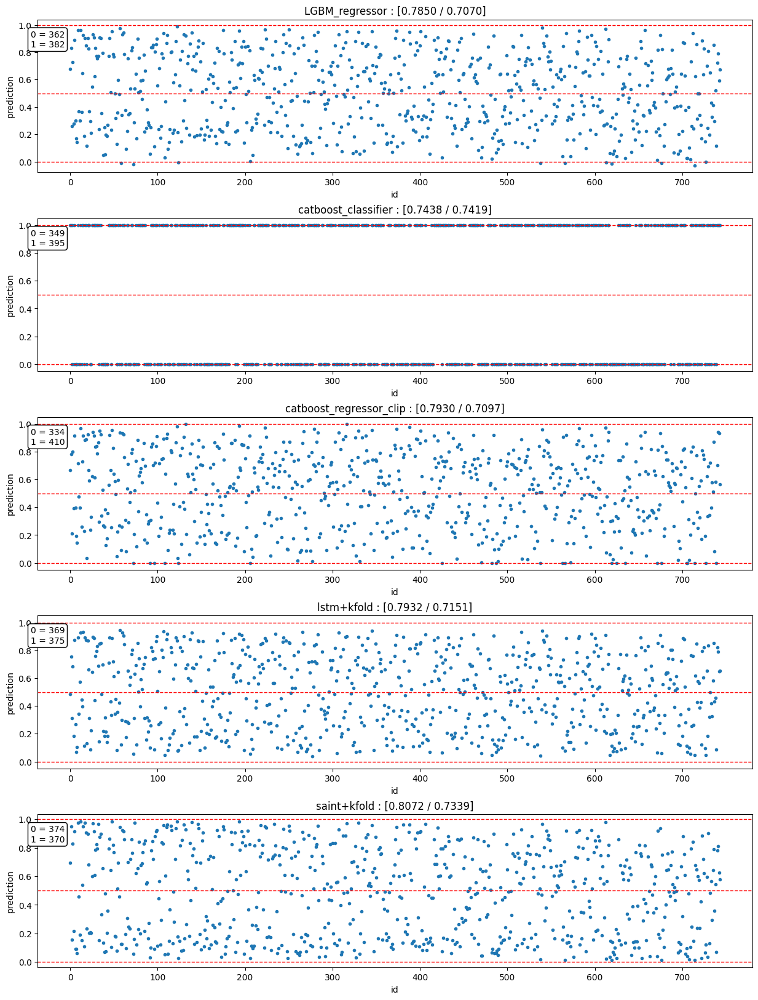catboost_regressor_clip의 경우 0이하의 값은 0으로, 1이상의 값은 1로 clip
03_02 Ensemble Result
| ensemble | ratio | voting | Public score [AUC / ACC] |
Private score [AUC / ACC] |
|---|---|---|---|---|
| saint+[kfold] Catboost_regressor Catboost_classifier |
7 : 2 : 1 | soft | [1st] 0.8143 / 0.7554 |
0.8373 / 0.7473 |
| saint+[kfold] Catboost_regressor Catboost_classifier |
5 : 3 : 2 | soft | [2nd] 0.8137 / 0.7527 |
[3rd] 0.8382 / 0.7581 |
| saint+[kfold] Catboost_regressor Catboost_classifier |
1 : 1 : 1 | hard | [3rd]] 0.8134 / 0.7419 |
0.8375 / 0.7581 |
| saint+[kfold] Catboost_regressor Catboost_classifier |
1 : 1 : 1 | soft | 0.8133 / 0.7419 | 0.8375 / 0.7581 |
| saint+[kfold] Catboost_regressor Catboost_classifier lstm[kfold] |
1 : 1 : 1 : 1 | soft | 0.8105 / 0.7419 |
[1st] 0.8390 / 0.7634 |
| saint+[kfold] Catboost_regressor lstm[kfold] |
1 : 1 : 1 | soft | 0.8084 / 0.7312 |
[2nd] 0.8388 / 0.7581 |
| saint+[kfold] Catboost_regressor LGBM_regressor |
1 : 1 : 1 | soft | 0.8067 / 0.8314 | 0.7312 / 0.7527 |
03_03 결론
대회에서 등수를 상승을 목적으로 ensemble을 한다면, Ensemble 과정에서 public score에만 집중하여 ensemble을 하였는 데, 결과적으로는 다양한 모델이 ensemble되는 것이 좋은 결과를 보였다.
대회에서는 2개를 선택하여 제출하는 것이 규칙이기 때문에 ensemble과정에서 같은 모델의 비율만 바꿔서 높은 것을 2개 내는 것보다는 서로 다른 모델로 이루어진 ensemble 결과물에서 각자 높은 것을 선택하여 제출하는 방법을 사용하는 전략이 좋은 점수를 받을 수 있을 것으로 예상된다.
- 회고
-
목표
ML 알고리즘 기반 baseline 코드 작성 및 hydra, wandb 연결
예측 모델 성능 향상 -
다음 프로젝트에서 시도해볼 것
recbole 같은 오픈소스 라이브러리 구조를 생각해서 여러 머신러닝 알고리즘을 하나로 묶는 것을 목표로 하였지만, 이 과정에서 hydra같은 실험 관리 라이브러리 사용이 이상적으로 잘 되지 않았다.
여러 머신러닝 알고리즘을 함께 사용하다 보니 hydra yaml파일의 피처들이 많이 늘어나게 되어 오히려 파악이 어려워지고, 그에 따라 하이퍼 파라미터에 따른 로깅 기능도 사용하기 어렵게 되었다.
이점을 보완해서 다음 프로젝트에는 통합으로 관리하기 보다는 알고리즘별로 나누는 것이 필요한것 같고 이 부분을 다시 시도해 볼 것이다. -
학습 과정에서의 교훈
테스트 데이터 셋에서 정답 라벨의 분포를 균형있게 맞추어야 된다는 점을 파악할 수 있었습니다.
댓글남기기